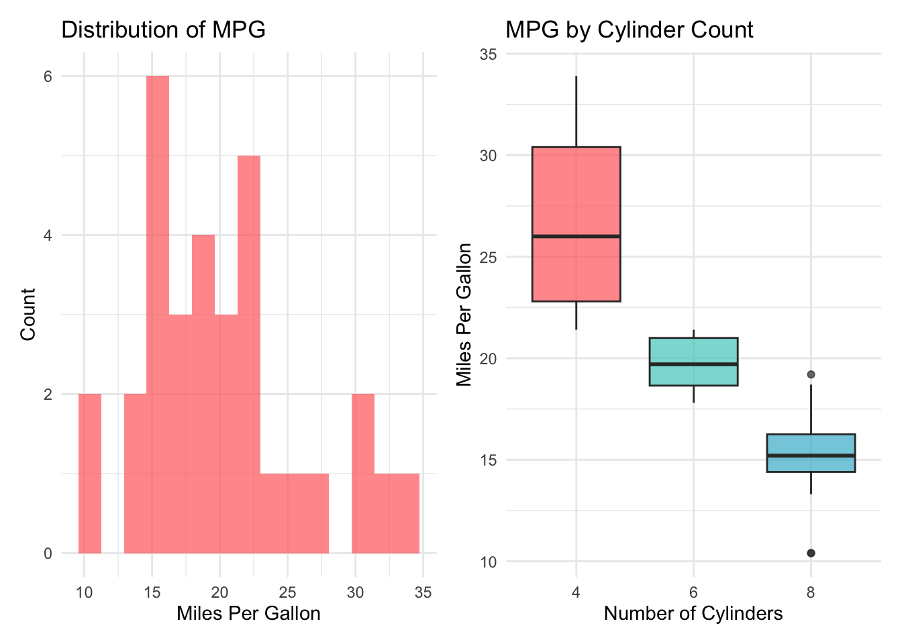
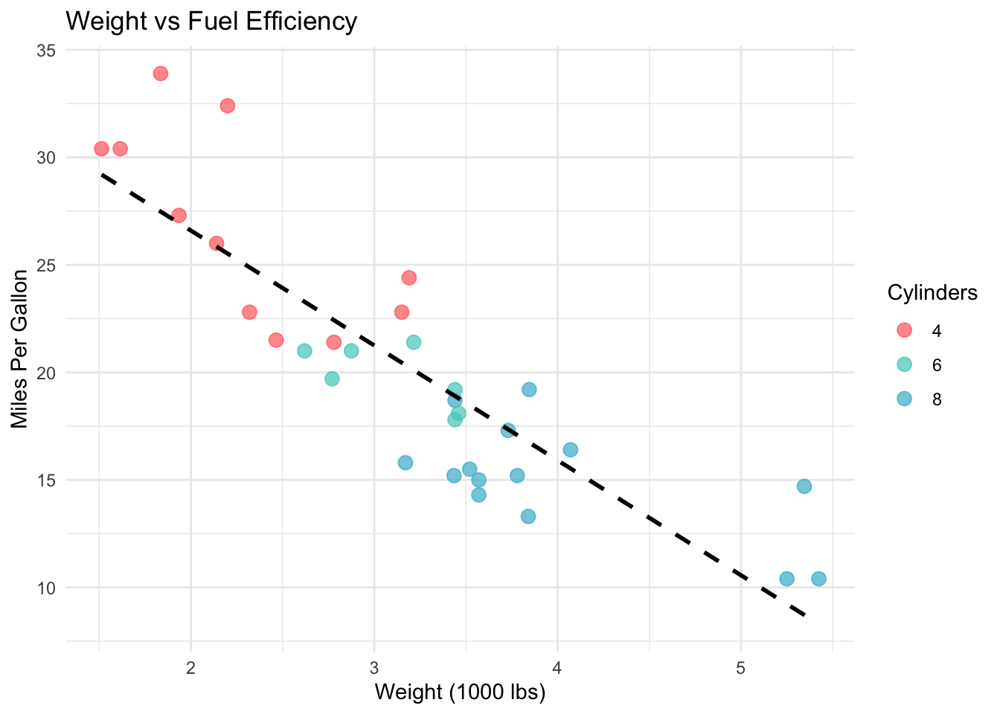
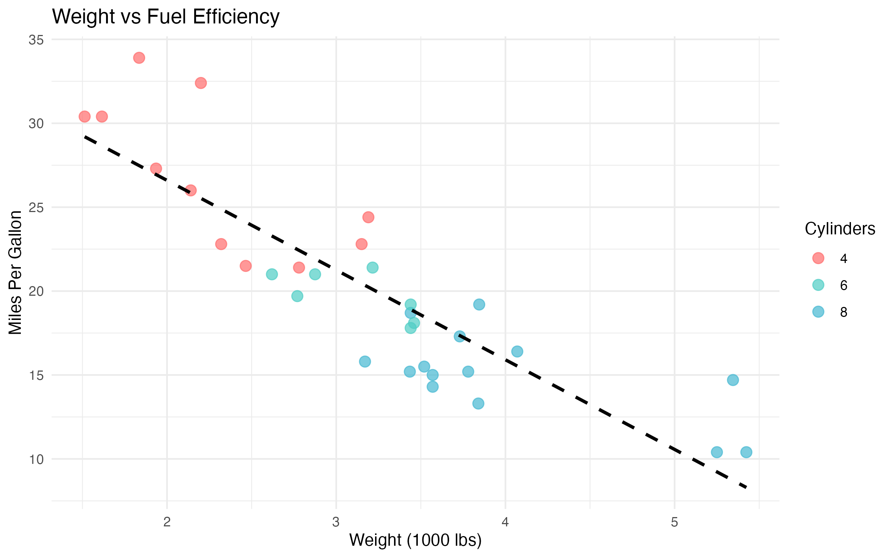
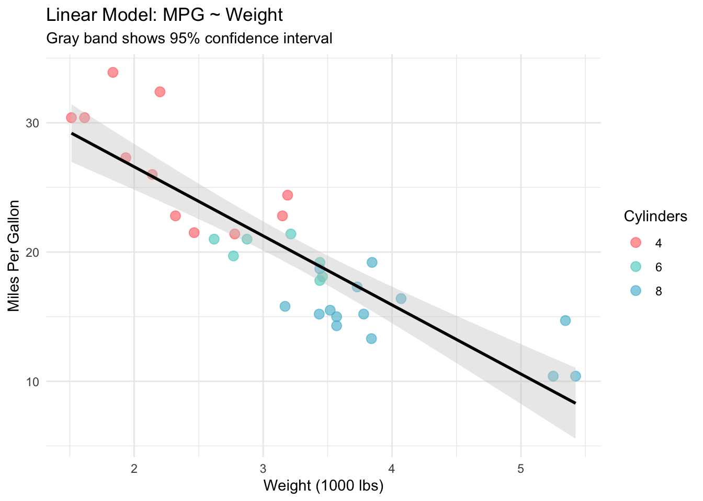
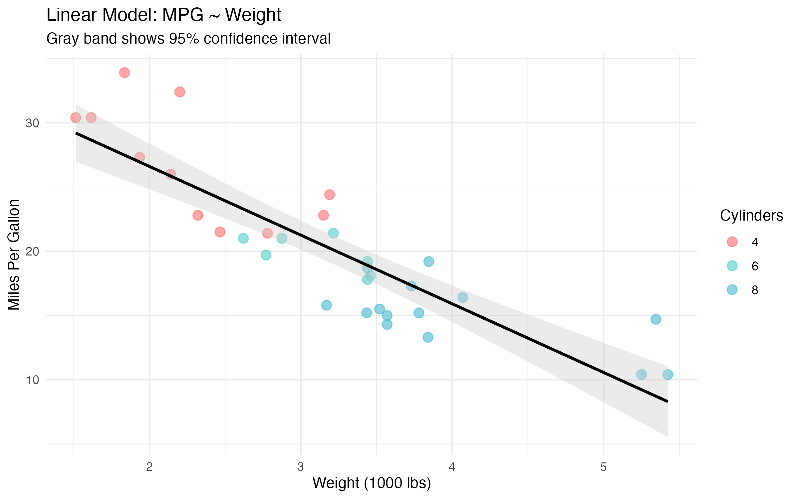
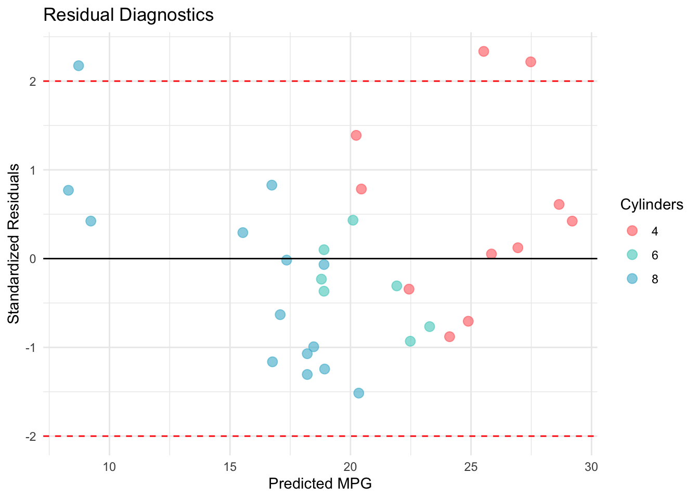

# Install packages if needed
install.packages(c("tidyverse", "broom", "knitr", "patchwork"))Your Engaging Title Here: A Learning Journey
Notes to myself on [discovering/implementing/understanding] [topic] 🤔
R Programming
Data Science
Statistical Computing
I didn’t really know much about [topic] until I tried to [implement/understand] it myself. Here’s what I learned along the way.

Photo caption with attribution if needed. This image sets the visual tone for your entire post.
1 Introduction
I didn’t really know much about [topic] until I [encountered situation/tried to implement it/needed it for project]. Like many data scientists, I thought [initial misconception or assumption]. Turns out, [what you actually discovered] 🤔
[Brief context: Why did you need this? What problem were you trying to solve? Keep it personal and specific.]
Here’s what I set out to understand:
1.1 Motivations
Why explore [topic]? - [Personal reason 1: specific problem you faced] - [Practical need 2: gap in your workflow] - [Learning goal 3: skill you wanted to develop] - [Curiosity 4: interesting question you had]
1.2 Objectives
What I wanted to accomplish: 1. [Specific, measurable objective 1] 2. [Specific, measurable objective 2] 3. [Specific, measurable objective 3] 4. [Stretch goal or advanced concept]
Disclaimer: I’m documenting my learning process here. If you spot errors or have better approaches, please let me know! 💙
2 Prerequisites and Setup
Here’s what you’ll need to follow along:
# Load libraries
library(tidyverse)
library(broom)
library(knitr)
library(patchwork)
# Set plotting theme
theme_set(theme_minimal(base_size = 12))
# Custom color palette
custom_colors <- c("#FF6B6B", "#4ECDC4", "#45B7D1", "#96CEB4")Background: Basic R and ggplot2 familiarity helpful but not required. I’ll explain concepts as we go!
3 What is [Topic/Concept]?
Before diving into code, let’s clarify what [topic] actually means. [Simple, plain-language explanation of the concept. Use an analogy if helpful.] In practice, this means [concrete example or application].
4 Getting Started: Initial Exploration
# Load data
data(mtcars)
# Display structure
glimpse(mtcars)Rows: 32
Columns: 11
$ mpg <dbl> 21.0, 21.0, 22.8, 21.4, 18.7, 18.1, 14.3, 24.4, 22.8, 19.2, 17.8,…
$ cyl <dbl> 6, 6, 4, 6, 8, 6, 8, 4, 4, 6, 6, 8, 8, 8, 8, 8, 8, 4, 4, 4, 4, 8,…
$ disp <dbl> 160.0, 160.0, 108.0, 258.0, 360.0, 225.0, 360.0, 146.7, 140.8, 16…
$ hp <dbl> 110, 110, 93, 110, 175, 105, 245, 62, 95, 123, 123, 180, 180, 180…
$ drat <dbl> 3.90, 3.90, 3.85, 3.08, 3.15, 2.76, 3.21, 3.69, 3.92, 3.92, 3.92,…
$ wt <dbl> 2.620, 2.875, 2.320, 3.215, 3.440, 3.460, 3.570, 3.190, 3.150, 3.…
$ qsec <dbl> 16.46, 17.02, 18.61, 19.44, 17.02, 20.22, 15.84, 20.00, 22.90, 18…
$ vs <dbl> 0, 0, 1, 1, 0, 1, 0, 1, 1, 1, 1, 0, 0, 0, 0, 0, 0, 1, 1, 1, 1, 0,…
$ am <dbl> 1, 1, 1, 0, 0, 0, 0, 0, 0, 0, 0, 0, 0, 0, 0, 0, 0, 1, 1, 1, 0, 0,…
$ gear <dbl> 4, 4, 4, 3, 3, 3, 3, 4, 4, 4, 4, 3, 3, 3, 3, 3, 3, 4, 4, 4, 3, 3,…
$ carb <dbl> 4, 4, 1, 1, 2, 1, 4, 2, 2, 4, 4, 3, 3, 3, 4, 4, 4, 1, 2, 1, 1, 2,…Okay, so we have 32 cars with 11 variables. Let’s see what we’re working with here 🤔
# Key summary stats
summary_table <- mtcars %>%
summarise(
n = n(),
mpg_mean = round(mean(mpg), 1),
mpg_sd = round(sd(mpg), 1),
hp_mean = round(mean(hp), 0),
hp_sd = round(sd(hp), 0)
)
kable(summary_table,
col.names = c("N", "MPG Mean", "MPG SD", "HP Mean", "HP SD"))| N | MPG Mean | MPG SD | HP Mean | HP SD |
|---|---|---|---|---|
| 32 | 20.1 | 6 | 147 | 69 |
Not too shabby! Average fuel efficiency is 20.1 MPG with quite a bit of variation (SD = 6.0).
5 Exploring the Data
Let’s visualize these patterns:
# Create distribution plots
p1 <- ggplot(mtcars, aes(x = mpg)) +
geom_histogram(bins = 15, fill = custom_colors[1], alpha = 0.7) +
labs(title = "Distribution of MPG", x = "Miles Per Gallon", y = "Count") +
theme_minimal()
p2 <- ggplot(mtcars, aes(x = factor(cyl), y = mpg, fill = factor(cyl))) +
geom_boxplot(alpha = 0.7) +
scale_fill_manual(values = custom_colors) +
labs(title = "MPG by Cylinder Count",
x = "Number of Cylinders", y = "Miles Per Gallon") +
theme_minimal() +
theme(legend.position = "none")
# Combine plots
combined_plot <- p1 + p2
print(combined_plot)
# Save the plot
ggsave("eda-overview.png", plot = combined_plot, width = 10, height = 5, dpi = 300)
Wow, that’s a clear pattern! Cars with fewer cylinders are way more fuel-efficient 📊
5.1 Looking for Relationships
# Find strongest correlations with MPG
correlations <- cor(mtcars) %>%
as.data.frame() %>%
rownames_to_column("var1") %>%
pivot_longer(-var1, names_to = "var2", values_to = "correlation") %>%
filter(var1 == "mpg", var2 != "mpg") %>%
arrange(desc(abs(correlation)))
# Show top 5
correlations %>% head(5)# A tibble: 5 × 3
var1 var2 correlation
<chr> <chr> <dbl>
1 mpg wt -0.868
2 mpg cyl -0.852
3 mpg disp -0.848
4 mpg hp -0.776
5 mpg drat 0.681🔍 Weight has the strongest correlation with MPG (r = -0.87). Let’s visualize that relationship:
# Plot the relationship
key_plot <- ggplot(mtcars, aes(x = wt, y = mpg, color = factor(cyl))) +
geom_point(size = 3, alpha = 0.7) +
geom_smooth(method = "lm", se = FALSE, color = "black", linetype = "dashed") +
scale_color_manual(values = custom_colors, name = "Cylinders") +
labs(title = "Weight vs Fuel Efficiency",
x = "Weight (1000 lbs)", y = "Miles Per Gallon") +
theme_minimal()
print(key_plot)
ggsave("correlation-plot.png", plot = key_plot, width = 8, height = 5, dpi = 300)
Interesting! Heavier cars consistently get worse mileage. Makes sense when you think about it 🚗
6 Building a Model
Alright, let’s build a simple linear model to quantify this relationship:
# Fit the model
simple_model <- lm(mpg ~ wt, data = mtcars)
# Get tidy summary
model_summary <- tidy(simple_model, conf.int = TRUE)
model_metrics <- glance(simple_model)
# Display the results
model_summary# A tibble: 2 × 7
term estimate std.error statistic p.value conf.low conf.high
<chr> <dbl> <dbl> <dbl> <dbl> <dbl> <dbl>
1 (Intercept) 37.3 1.88 19.9 8.24e-19 33.5 41.1
2 wt -5.34 0.559 -9.56 1.29e-10 -6.49 -4.20glance(simple_model)# A tibble: 1 × 12
r.squared adj.r.squared sigma statistic p.value df logLik AIC BIC
<dbl> <dbl> <dbl> <dbl> <dbl> <dbl> <dbl> <dbl> <dbl>
1 0.753 0.745 3.05 91.4 1.29e-10 1 -80.0 166. 170.
# ℹ 3 more variables: deviance <dbl>, df.residual <int>, nobs <int>📊 Nice! The model explains 75% of the variance (R² = 0.75). For every 1,000 lbs of weight, we lose about 5.3 MPG (95% CI: [-6.5, -4.1]) ✅
Let’s make some predictions to see how this works in practice:
# Predict MPG for different weights
new_data <- tibble(wt = c(2, 3, 4))
predictions <- predict(simple_model, newdata = new_data, interval = "confidence")
# Combine for display
cbind(new_data, predictions) wt fit lwr upr
1 2 26.59618 24.82389 28.36848
2 3 21.25171 20.12444 22.37899
3 4 15.90724 14.49018 17.32429📝 So a 2,000 lb car gets ~30 MPG, while a 4,000 lb car only gets ~15 MPG. That’s quite a difference!
6.1 Model Visualization
# Visualize model fit with confidence bands
model_plot <- ggplot(mtcars, aes(x = wt, y = mpg)) +
geom_point(aes(color = factor(cyl)), size = 3, alpha = 0.6) +
geom_smooth(method = "lm", color = "black", fill = "gray80") +
scale_color_manual(values = custom_colors, name = "Cylinders") +
labs(title = "Linear Model: MPG ~ Weight",
subtitle = "Gray band shows 95% confidence interval",
x = "Weight (1000 lbs)", y = "Miles Per Gallon") +
theme_minimal()
print(model_plot)
ggsave("model-plot.png", plot = model_plot, width = 8, height = 5, dpi = 300)
7 Checking Our Work
Before we trust these results, let’s check if our model assumptions hold up:
# Add diagnostic information
mtcars_diagnostics <- mtcars %>%
mutate(
predicted = predict(simple_model),
residuals = residuals(simple_model),
std_resid = rstandard(simple_model)
)
# Check for outliers
outliers <- which(abs(mtcars_diagnostics$std_resid) > 2.5)⚠️ Diagnostic checks: Found 0 potential outliers (>2.5 SD). Residual standard error is 3.05 MPG.
Now let’s visualize the residuals to check for patterns:
# Create diagnostic plot
diag_plot <- ggplot(mtcars_diagnostics, aes(x = predicted, y = std_resid)) +
geom_point(aes(color = factor(cyl)), size = 3, alpha = 0.6) +
geom_hline(yintercept = c(-2, 0, 2),
linetype = c("dashed", "solid", "dashed"),
color = c("red", "black", "red")) +
scale_color_manual(values = custom_colors, name = "Cylinders") +
labs(title = "Residual Diagnostics",
x = "Predicted MPG", y = "Standardized Residuals") +
theme_minimal()
print(diag_plot)
ggsave("diagnostics-plot.png", plot = diag_plot, width = 8, height = 5, dpi = 300)
Looks pretty good! No major patterns in the residuals, though we have a couple of potential outliers worth investigating 🔍
7.1 Things to Watch Out For
A few gotchas I encountered while working on this:
Don’t extrapolate too far - This model works for weights between 1.5-5.5 thousand lbs. Predicting outside that range? Risky!
Correlation ≠ Causation - Weight correlates with MPG, but there are confounding variables (engine size, aerodynamics, etc.)
Check your assumptions - Always plot residuals! A good R² doesn’t guarantee your model is appropriate.
Small sample size - We only have 32 cars. Take the confidence intervals seriously!
8 What Did We Learn?
8.1 Lessons Learnt
Here’s what I took away from this exploration:
Conceptual Understanding: - Vehicle weight is a strong predictor of fuel efficiency (R² = 0.75) - Each 1,000 lbs reduces MPG by ~5.3 miles (95% CI: [-6.5, -4.1]) - Cylinder count effects are partially mediated through weight - Simple models can be surprisingly effective with the right predictor
Technical Skills: - Using broom::tidy() for clean model output formatting ✅ - Calculating and interpreting confidence intervals for predictions - Creating diagnostic plots to validate regression assumptions - Combining multiple ggplot visualizations with patchwork
Gotchas and Pitfalls: - Always check residual plots - R² alone isn’t enough! - Extrapolation beyond data range is dangerous - Small sample sizes (n=32) require cautious interpretation - Correlation doesn’t prove causation (confounding variables matter)
8.2 Limitations
This analysis has several limitations to keep in mind:
- Old data: mtcars is from 1974 - modern vehicles (hybrids, EVs) behave differently
- Small sample: Only 32 observations limits statistical power
- Missing variables: Doesn’t account for aerodynamics, transmission type, engine tech
- Simple model: Single predictor ignores important confounders
- Limited scope: Only passenger cars; may not generalize to trucks/SUVs
8.3 Opportunities for Improvement
If I had more time, here’s what I’d explore next:
- Multiple regression - Add cylinder count, horsepower, transmission type
- Interaction effects - Does weight impact differ by number of cylinders?
- Modern data - Replicate with 2020+ vehicle data to see how relationships changed
- Non-linear models - Try polynomial regression or splines for better fit
- Machine learning comparison - How does linear regression compare to random forest?
- Causal inference - Use techniques to establish causality, not just correlation
9 Wrapping Up
So that’s my journey exploring [topic]! We saw that vehicle weight is a powerful predictor of fuel efficiency, accounting for 75% of the variance. The model is simple but effective, though it has limitations worth keeping in mind.
Main takeaways: - Weight strongly predicts MPG (R² = 0.75, β = -5.3) - Always check model assumptions with diagnostic plots - Confidence intervals matter, especially with small samples - Simple models can be surprisingly powerful
I learned a lot working through this, especially about [specific technical skill you gained]. There’s definitely room for improvement—adding more predictors, trying non-linear models, and using modern data would all be interesting extensions.
If you’re trying this yourself: - Start with exploration before modeling - Plot your residuals! - Don’t trust high R² blindly - Report confidence intervals alongside point estimates
Thanks for following along! 💙
10 See Also
Related posts and resources:
- [Link to related post 1]
- [Link to related post 2]
- [Link to related resource]
Key Resources: - R for Data Science - Free book on tidyverse - Introduction to Statistical Learning - Free textbook with R code - broom package docs - Tidy model outputs - Cross Validated - Stats Q&A community
11 Reproducibility
Data: mtcars (built-in R dataset, data(mtcars)) Code: All code shown in this post Session Info:
R version 4.5.1 (2025-06-13)
Platform: aarch64-apple-darwin20
Running under: macOS Sequoia 15.6.1
Matrix products: default
BLAS: /Library/Frameworks/R.framework/Versions/4.5-arm64/Resources/lib/libRblas.0.dylib
LAPACK: /Library/Frameworks/R.framework/Versions/4.5-arm64/Resources/lib/libRlapack.dylib; LAPACK version 3.12.1
locale:
[1] en_US.UTF-8/en_US.UTF-8/en_US.UTF-8/C/en_US.UTF-8/en_US.UTF-8
time zone: America/Los_Angeles
tzcode source: internal
attached base packages:
[1] stats graphics grDevices utils datasets methods base
other attached packages:
[1] patchwork_1.3.2 knitr_1.50 broom_1.0.10 lubridate_1.9.4
[5] forcats_1.0.0 stringr_1.5.2 dplyr_1.1.4 purrr_1.1.0
[9] readr_2.1.5 tidyr_1.3.1 tibble_3.3.0 ggplot2_4.0.0
[13] tidyverse_2.0.0
loaded via a namespace (and not attached):
[1] utf8_1.2.6 generics_0.1.4 lattice_0.22-7 stringi_1.8.7
[5] hms_1.1.3 digest_0.6.37 magrittr_2.0.4 evaluate_1.0.5
[9] grid_4.5.1 timechange_0.3.0 RColorBrewer_1.1-3 fastmap_1.2.0
[13] Matrix_1.7-3 jsonlite_2.0.0 backports_1.5.0 mgcv_1.9-3
[17] scales_1.4.0 textshaping_1.0.3 cli_3.6.5 rlang_1.1.6
[21] splines_4.5.1 withr_3.0.2 yaml_2.3.10 tools_4.5.1
[25] parallel_4.5.1 tzdb_0.5.0 vctrs_0.6.5 R6_2.6.1
[29] lifecycle_1.0.4 htmlwidgets_1.6.4 ragg_1.4.0 pkgconfig_2.0.3
[33] pillar_1.11.1 gtable_0.3.6 glue_1.8.0 systemfonts_1.2.3
[37] xfun_0.53 tidyselect_1.2.1 farver_2.1.2 htmltools_0.5.8.1
[41] nlme_3.1-168 rmarkdown_2.30 labeling_0.4.3 compiler_4.5.1
[45] S7_0.2.0 12 Let’s Connect!
Have questions, suggestions, or spot an error? Let me know!
- Twitter/X: @rgt47
- Mastodon: @your_mastodon
- GitHub: rgt47
- Email: Contact form
Please reach out if you: - Spot errors or have corrections - Have suggestions for improvement - Want to discuss the approach - Have questions about implementation - Just want to connect! 💙
Everyday is a school day - let’s learn together!
Reuse
Citation
BibTeX citation:
@online{(ryy)_glenn_thomas2025,
author = {(Ryy) Glenn Thomas, Ronald and G. Thomas, Ronald},
title = {Your {Engaging} {Title} {Here:} {A} {Learning} {Journey}},
date = {2025-01-01},
url = {https://focusonr.org/posts/template_post/},
langid = {en}
}
For attribution, please cite this work as:
(Ryy) Glenn Thomas, Ronald, and Ronald G. Thomas. 2025. “Your
Engaging Title Here: A Learning Journey.” January 1, 2025. https://focusonr.org/posts/template_post/.